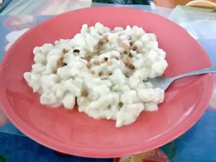
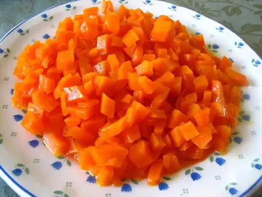

Дешёвые рецепты из простых продуктов
Бюджетные блюда из того, что продаётся в любом магазине. 112 рецептов: у каждого время, калории и БЖУ на порцию, пошаговые инструкции и список покупок
 Яичница-глазунья с помидорами10 мин · 243 ккал · Б 15 г · Завтрак
Яичница-глазунья с помидорами10 мин · 243 ккал · Б 15 г · Завтрак Яйца всмятку и в мешочек10 мин · 173 ккал · Б 14 г · Завтрак
Яйца всмятку и в мешочек10 мин · 173 ккал · Б 14 г · Завтрак Манная каша10 мин · 307 ккал · Б 10 г · Завтрак
Манная каша10 мин · 307 ккал · Б 10 г · Завтрак Кускус10 мин · 233 ккал · Б 6 г · Гарнир
Кускус10 мин · 233 ккал · Б 6 г · Гарнир Салат из свежих овощей10 мин · 130 ккал · Б 2 г · Салат
Салат из свежих овощей10 мин · 130 ккал · Б 2 г · Салат Морковь с чесноком и сыром10 мин · 279 ккал · Б 11 г · Салат
Морковь с чесноком и сыром10 мин · 279 ккал · Б 11 г · Салат Ачичук10 мин · 41 ккал · Б 2 г · Салат
Ачичук10 мин · 41 ккал · Б 2 г · Салат Творог с зеленью10 мин · 237 ккал · Б 27 г · Закуска
Творог с зеленью10 мин · 237 ккал · Б 27 г · Закуска Овсяная каша на молоке12 мин · 347 ккал · Б 12 г · Завтрак
Овсяная каша на молоке12 мин · 347 ккал · Б 12 г · Завтрак Овсяноблин15 мин · 339 ккал · Б 18 г · Завтрак
Овсяноблин15 мин · 339 ккал · Б 18 г · Завтрак Гренки сладкие15 мин · 279 ккал · Б 9 г · Завтрак
Гренки сладкие15 мин · 279 ккал · Б 9 г · Завтрак Мацебрай15 мин · 368 ккал · Б 15 г · Завтрак
Мацебрай15 мин · 368 ккал · Б 15 г · Завтрак Гренки из чёрствого хлеба с чесноком15 мин · 317 ккал · Б 6 г · Закуска
Гренки из чёрствого хлеба с чесноком15 мин · 317 ккал · Б 6 г · Закуска Омлет с остатками овощей15 мин · 361 ккал · Б 18 г · Завтрак
Омлет с остатками овощей15 мин · 361 ккал · Б 18 г · Завтрак Омлет на пару20 мин · 223 ккал · Б 16 г · Завтрак
Омлет на пару20 мин · 223 ккал · Б 16 г · Завтрак Макароны с сыром20 мин · 453 ккал · Б 18 г · Гарнир
Макароны с сыром20 мин · 453 ккал · Б 18 г · Гарнир Жареный рис с яйцом и овощами20 мин · 532 ккал · Б 16 г · Второе блюдо
Жареный рис с яйцом и овощами20 мин · 532 ккал · Б 16 г · Второе блюдо Морковь по-корейски20 мин · 136 ккал · Б 1 г · Салат
Морковь по-корейски20 мин · 136 ккал · Б 1 г · Салат Гаспачо20 мин · 185 ккал · Б 4 г · Суп
Гаспачо20 мин · 185 ккал · Б 4 г · Суп Жареный рис с овощами по-домашнему20 мин · 401 ккал · Б 11 г · Второе блюдо
Жареный рис с овощами по-домашнему20 мин · 401 ккал · Б 11 г · Второе блюдо Гречневая каша с молоком25 мин · 272 ккал · Б 11 г · Завтрак
Гречневая каша с молоком25 мин · 272 ккал · Б 11 г · Завтрак Гречка рассыпчатая25 мин · 156 ккал · Б 6 г · Гарнир
Гречка рассыпчатая25 мин · 156 ккал · Б 6 г · Гарнир Рис рассыпчатый25 мин · 194 ккал · Б 3 г · Гарнир
Рис рассыпчатый25 мин · 194 ккал · Б 3 г · Гарнир Кабачки жареные с чесноком25 мин · 264 ккал · Б 3 г · Закуска
Кабачки жареные с чесноком25 мин · 264 ккал · Б 3 г · Закуска Паста с томатным соусом25 мин · 479 ккал · Б 13 г · Второе блюдо
Паста с томатным соусом25 мин · 479 ккал · Б 13 г · Второе блюдо Форшмак из сельди25 мин · 234 ккал · Б 13 г · Закуска
Форшмак из сельди25 мин · 234 ккал · Б 13 г · Закуска Паста с тунцом25 мин · 518 ккал · Б 26 г · Второе блюдо
Паста с тунцом25 мин · 518 ккал · Б 26 г · Второе блюдо Сырный омлет-фриттата25 мин · 354 ккал · Б 24 г · Завтрак
Сырный омлет-фриттата25 мин · 354 ккал · Б 24 г · Завтрак Пюре из кабачка и цветной капусты25 мин · 46 ккал · Б 2 г · Гарнир
Пюре из кабачка и цветной капусты25 мин · 46 ккал · Б 2 г · Гарнир Протеиновые блины на твороге25 мин · 344 ккал · Б 29 г · Завтрак
Протеиновые блины на твороге25 мин · 344 ккал · Б 29 г · Завтрак Салат из курицы из супа25 мин · 369 ккал · Б 31 г · Салат
Салат из курицы из супа25 мин · 369 ккал · Б 31 г · Салат Оладьи из вчерашнего риса25 мин · 380 ккал · Б 10 г · Завтрак
Оладьи из вчерашнего риса25 мин · 380 ккал · Б 10 г · Завтрак Булгур с овощами30 мин · 272 ккал · Б 8 г · Гарнир
Булгур с овощами30 мин · 272 ккал · Б 8 г · Гарнир Куриная печень со сметаной30 мин · 502 ккал · Б 35 г · Второе блюдо
Куриная печень со сметаной30 мин · 502 ккал · Б 35 г · Второе блюдо Минтай в кляре30 мин · 366 ккал · Б 30 г · Второе блюдо
Минтай в кляре30 мин · 366 ккал · Б 30 г · Второе блюдо Табуле30 мин · 204 ккал · Б 4 г · Салат
Табуле30 мин · 204 ккал · Б 4 г · Салат Ленивые вареники30 мин · 365 ккал · Б 29 г · Завтрак
Ленивые вареники30 мин · 365 ккал · Б 29 г · Завтрак Макароны по-флотски из отварного мяса30 мин · 631 ккал · Б 34 г · Второе блюдо
Макароны по-флотски из отварного мяса30 мин · 631 ккал · Б 34 г · Второе блюдо Шакшука35 мин · 361 ккал · Б 19 г · Завтрак
Шакшука35 мин · 361 ккал · Б 19 г · Завтрак Оладьи на кефире35 мин · 441 ккал · Б 13 г · Завтрак
Оладьи на кефире35 мин · 441 ккал · Б 13 г · Завтрак Запечённые яблоки с мёдом и орехами35 мин · 119 ккал · Б 1 г · Десерт
Запечённые яблоки с мёдом и орехами35 мин · 119 ккал · Б 1 г · Десерт Суп из красной чечевицы35 мин · 280 ккал · Б 14 г · Суп
Суп из красной чечевицы35 мин · 280 ккал · Б 14 г · Суп Картофельное пюре35 мин · 312 ккал · Б 6 г · Гарнир
Картофельное пюре35 мин · 312 ккал · Б 6 г · Гарнир Макароны по-флотски35 мин · 719 ккал · Б 33 г · Второе блюдо
Макароны по-флотски35 мин · 719 ккал · Б 33 г · Второе блюдо Цветная капуста в духовке35 мин · 209 ккал · Б 7 г · Гарнир
Цветная капуста в духовке35 мин · 209 ккал · Б 7 г · Гарнир Крабовый салат35 мин · 345 ккал · Б 12 г · Салат
Крабовый салат35 мин · 345 ккал · Б 12 г · Салат Постное овсяное печенье35 мин · 347 ккал · Б 6 г · Десерт
Постное овсяное печенье35 мин · 347 ккал · Б 6 г · Десерт Запеканка из макарон с сыром и яйцом35 мин · 358 ккал · Б 19 г · Второе блюдо
Запеканка из макарон с сыром и яйцом35 мин · 358 ккал · Б 19 г · Второе блюдо Овсяное печенье40 мин · 284 ккал · Б 5 г · Выпечка
Овсяное печенье40 мин · 284 ккал · Б 5 г · Выпечка Окрошка на кефире40 мин · 309 ккал · Б 17 г · Суп
Окрошка на кефире40 мин · 309 ккал · Б 17 г · Суп Скумбрия в духовке40 мин · 630 ккал · Б 55 г · Второе блюдо
Скумбрия в духовке40 мин · 630 ккал · Б 55 г · Второе блюдо Драники40 мин · 445 ккал · Б 8 г · Второе блюдо
Драники40 мин · 445 ккал · Б 8 г · Второе блюдо Лечо из перца и помидоров40 мин · 204 ккал · Б 5 г · Гарнир
Лечо из перца и помидоров40 мин · 204 ккал · Б 5 г · Гарнир Фалафель40 мин · 445 ккал · Б 13 г · Второе блюдо
Фалафель40 мин · 445 ккал · Б 13 г · Второе блюдо Каша тыквенно-рисовая40 мин · 152 ккал · Б 4 г · Завтрак
Каша тыквенно-рисовая40 мин · 152 ккал · Б 4 г · Завтрак Овощной суп-пюре40 мин · 94 ккал · Б 3 г · Суп
Овощной суп-пюре40 мин · 94 ккал · Б 3 г · Суп Пшённая каша с тыквой45 мин · 290 ккал · Б 9 г · Завтрак
Пшённая каша с тыквой45 мин · 290 ккал · Б 9 г · Завтрак Блины на молоке45 мин · 379 ккал · Б 12 г · Завтрак
Блины на молоке45 мин · 379 ккал · Б 12 г · Завтрак Щи из свежей капусты45 мин · 119 ккал · Б 4 г · Суп
Щи из свежей капусты45 мин · 119 ккал · Б 4 г · Суп Рыбные котлеты45 мин · 328 ккал · Б 32 г · Второе блюдо
Рыбные котлеты45 мин · 328 ккал · Б 32 г · Второе блюдо Курица с гречкой на сковороде45 мин · 466 ккал · Б 40 г · Второе блюдо
Курица с гречкой на сковороде45 мин · 466 ккал · Б 40 г · Второе блюдо
Галушки полтавские45 мин · 556 ккал · Б 15 г · Второе блюдо Суп-лапша с курицей по-азиатски45 мин · 266 ккал · Б 30 г · Суп
Суп-лапша с курицей по-азиатски45 мин · 266 ккал · Б 30 г · Суп Куриные котлеты в духовке45 мин · 265 ккал · Б 25 г · Второе блюдо
Куриные котлеты в духовке45 мин · 265 ккал · Б 25 г · Второе блюдо Гречка по-купечески постная с грибами45 мин · 386 ккал · Б 14 г · Второе блюдо
Гречка по-купечески постная с грибами45 мин · 386 ккал · Б 14 г · Второе блюдо Зразы из вчерашнего пюре с грибами45 мин · 377 ккал · Б 10 г · Второе блюдо
Зразы из вчерашнего пюре с грибами45 мин · 377 ккал · Б 10 г · Второе блюдо Грибной суп50 мин · 163 ккал · Б 5 г · Суп
Грибной суп50 мин · 163 ккал · Б 5 г · Суп Суп с фрикадельками50 мин · 329 ккал · Б 18 г · Суп
Суп с фрикадельками50 мин · 329 ккал · Б 18 г · Суп Картофель дольками в духовке50 мин · 290 ккал · Б 5 г · Гарнир
Картофель дольками в духовке50 мин · 290 ккал · Б 5 г · Гарнир Тушёная капуста50 мин · 191 ккал · Б 6 г · Гарнир
Тушёная капуста50 мин · 191 ккал · Б 6 г · Гарнир Овощное рагу50 мин · 228 ккал · Б 5 г · Второе блюдо
Овощное рагу50 мин · 228 ккал · Б 5 г · Второе блюдо Котлеты из чечевицы50 мин · 428 ккал · Б 18 г · Второе блюдо
Котлеты из чечевицы50 мин · 428 ккал · Б 18 г · Второе блюдо Минестроне50 мин · 235 ккал · Б 8 г · Суп
Минестроне50 мин · 235 ккал · Б 8 г · Суп Тефтели из индейки на пару50 мин · 221 ккал · Б 22 г · Второе блюдо
Тефтели из индейки на пару50 мин · 221 ккал · Б 22 г · Второе блюдо Тефтели из индейки в томате50 мин · 300 ккал · Б 29 г · Второе блюдо
Тефтели из индейки в томате50 мин · 300 ккал · Б 29 г · Второе блюдо Минтай в духовке с овощами50 мин · 213 ккал · Б 26 г · Второе блюдо
Минтай в духовке с овощами50 мин · 213 ккал · Б 26 г · Второе блюдо Тонкие блины на кефире с дырочками50 мин · 433 ккал · Б 14 г · Завтрак
Тонкие блины на кефире с дырочками50 мин · 433 ккал · Б 14 г · Завтрак Грибная лапша постная50 мин · 168 ккал · Б 7 г · Суп
Грибная лапша постная50 мин · 168 ккал · Б 7 г · Суп Рыбные тефтели в сметане55 мин · 273 ккал · Б 24 г · Второе блюдо
Рыбные тефтели в сметане55 мин · 273 ккал · Б 24 г · Второе блюдо Чечевица с курицей55 мин · 338 ккал · Б 37 г · Второе блюдо
Чечевица с курицей55 мин · 338 ккал · Б 37 г · Второе блюдо Творожная запеканка60 мин · 244 ккал · Б 18 г · Завтрак
Творожная запеканка60 мин · 244 ккал · Б 18 г · Завтрак Шарлотка с яблоками60 мин · 251 ккал · Б 6 г · Выпечка
Шарлотка с яблоками60 мин · 251 ккал · Б 6 г · Выпечка Куриный суп с лапшой60 мин · 275 ккал · Б 21 г · Суп
Куриный суп с лапшой60 мин · 275 ккал · Б 21 г · Суп Оливье60 мин · 494 ккал · Б 16 г · Салат
Оливье60 мин · 494 ккал · Б 16 г · Салат Аджапсандали60 мин · 288 ккал · Б 5 г · Гарнир
Аджапсандали60 мин · 288 ккал · Б 5 г · Гарнир
Цимес морковный60 мин · 190 ккал · Б 3 г · Гарнир Крашеные яйца в луковой шелухе60 мин · 86 ккал · Б 7 г · Закуска
Крашеные яйца в луковой шелухе60 мин · 86 ккал · Б 7 г · Закуска Постные котлеты из капусты60 мин · 260 ккал · Б 7 г · Второе блюдо
Постные котлеты из капусты60 мин · 260 ккал · Б 7 г · Второе блюдо Картофельное рагу с грибами60 мин · 315 ккал · Б 10 г · Второе блюдо
Картофельное рагу с грибами60 мин · 315 ккал · Б 10 г · Второе блюдо Хлебный пудинг60 мин · 474 ккал · Б 15 г · Десерт
Хлебный пудинг60 мин · 474 ккал · Б 15 г · Десерт Куриные бёдра с картошкой в духовке65 мин · 765 ккал · Б 51 г · Второе блюдо
Куриные бёдра с картошкой в духовке65 мин · 765 ккал · Б 51 г · Второе блюдо Ленивые голубцы70 мин · 552 ккал · Б 24 г · Второе блюдо
Ленивые голубцы70 мин · 552 ккал · Б 24 г · Второе блюдо Свёкла с чесноком и орехами70 мин · 238 ккал · Б 4 г · Салат
Свёкла с чесноком и орехами70 мин · 238 ккал · Б 4 г · Салат Гефилте фиш (рыбные котлеты в бульоне)70 мин · 249 ккал · Б 34 г · Второе блюдо
Гефилте фиш (рыбные котлеты в бульоне)70 мин · 249 ккал · Б 34 г · Второе блюдо Чили кон карне70 мин · 550 ккал · Б 31 г · Второе блюдо
Чили кон карне70 мин · 550 ккал · Б 31 г · Второе блюдо Постный пирог с яблоками70 мин · 346 ккал · Б 4 г · Выпечка
Постный пирог с яблоками70 мин · 346 ккал · Б 4 г · Выпечка Винегрет75 мин · 178 ккал · Б 4 г · Салат
Винегрет75 мин · 178 ккал · Б 4 г · Салат Ленивые хинкали80 мин · 758 ккал · Б 33 г · Второе блюдо
Ленивые хинкали80 мин · 758 ккал · Б 33 г · Второе блюдо Кугель картофельный80 мин · 290 ккал · Б 7 г · Гарнир
Кугель картофельный80 мин · 290 ккал · Б 7 г · Гарнир Гороховый суп постный90 мин · 228 ккал · Б 10 г · Суп
Гороховый суп постный90 мин · 228 ккал · Б 10 г · Суп Суп с домашней лапшой токмач100 мин · 451 ккал · Б 32 г · Суп
Суп с домашней лапшой токмач100 мин · 451 ккал · Б 32 г · Суп Вареники с картошкой100 мин · 515 ккал · Б 12 г · Второе блюдо
Вареники с картошкой100 мин · 515 ккал · Б 12 г · Второе блюдо Куриные желудки тушёные100 мин · 406 ккал · Б 44 г · Второе блюдо
Куриные желудки тушёные100 мин · 406 ккал · Б 44 г · Второе блюдо Пампушки с чесноком120 мин · 347 ккал · Б 8 г · Выпечка
Пампушки с чесноком120 мин · 347 ккал · Б 8 г · Выпечка Лобио из фасоли150 мин · 426 ккал · Б 20 г · Второе блюдо
Лобио из фасоли150 мин · 426 ккал · Б 20 г · Второе блюдо Фасолевый суп постный150 мин · 160 ккал · Б 9 г · Суп
Фасолевый суп постный150 мин · 160 ккал · Б 9 г · Суп Хала180 мин · 270 ккал · Б 8 г · Выпечка
Хала180 мин · 270 ккал · Б 8 г · Выпечка Холодец из курицы с желатином180 мин · 223 ккал · Б 26 г · Закуска
Холодец из курицы с желатином180 мин · 223 ккал · Б 26 г · Закуска- Котлеты из гречневой каши30 мин · 388 ккал · Б 11 г · Второе блюдо
- Гречка с грибами и луком35 мин · 332 ккал · Б 13 г · Второе блюдо
- Кыстыбый с картофелем60 мин · 612 ккал · Б 14 г · Второе блюдо
- Рисовая запеканка с яблоком75 мин · 280 ккал · Б 8 г · Десерт
Другие подборки
- Что приготовить из курицы
- Что приготовить из фарша
- Что приготовить из мяса
- Что приготовить из рыбы
- Что приготовить из картошки
- Что приготовить из яиц
- Что приготовить из творога
- Что приготовить из кабачков
- Что приготовить из капусты
- Что приготовить из грибов
- Что приготовить из риса
- Что приготовить из макарон
- Что приготовить из гречки
- Быстрый ужин за 30 минут
- Быстрый завтрак за 20 минут
- Что приготовить на скорую руку
- ПП-рецепты: лёгкие блюда до 400 ккал
- Белковые блюда: от 25 г белка на порцию
- Что приготовить ребёнку
- Постные блюда
- Блюда на пару
- Что приготовить в духовке
- Простые супы
- Простые салаты
- Выпечка и десерты
- Блюда на праздничный стол
- Что приготовить из остатков